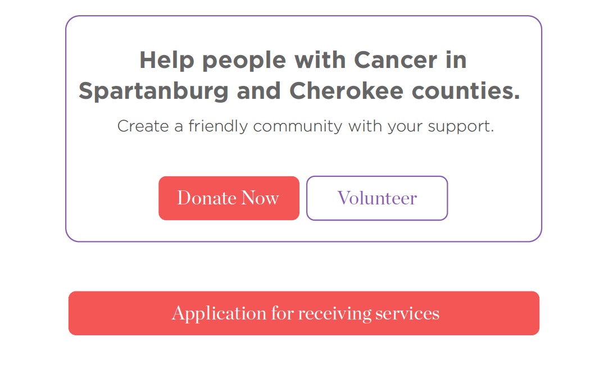

solutions
the solutions to the website
Call for action
The call for action on the cancer association website is getting the user to Donate or volunteer. The following important information is services and volunteering. The idea is to draw attention to where the user needs to donate or volunteer and give them a short explanation of who they will be affecting and why it's essential. The last important button is a link to an application that you apply to receive their services.